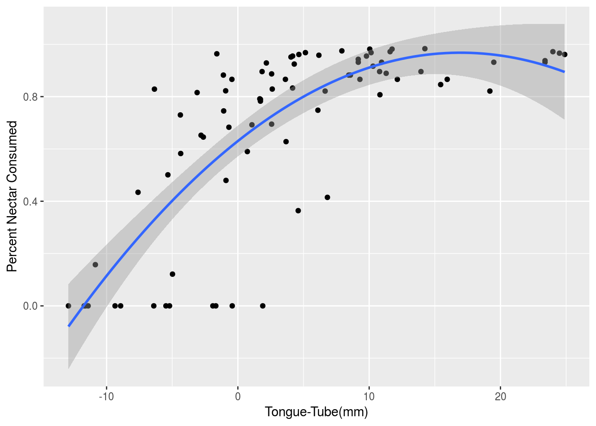
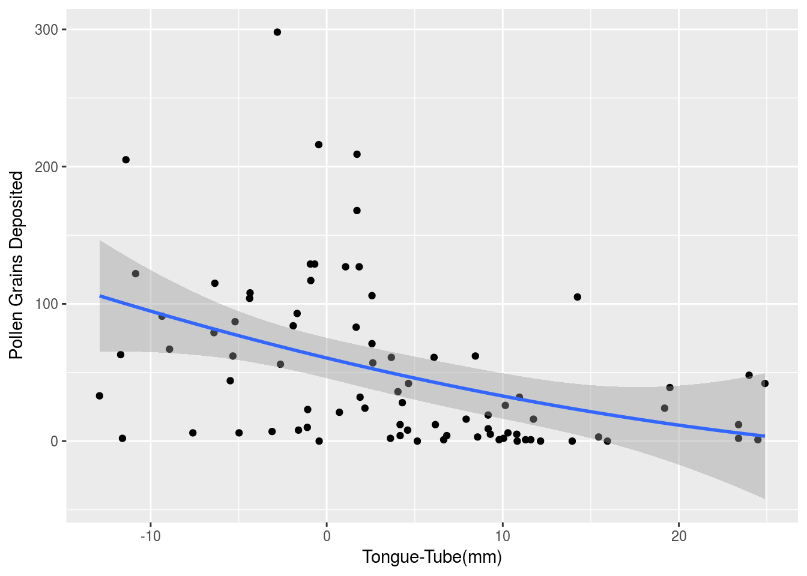

This is a tutorial for employing the method of coevolutionary inference described in Week & Nuismer 2017. Data used in this tutorial is available here. All analysis is done in the statistal programming language R.
Before we can infer the strengths of biotic selection we need to infer some key background parameters. Specifically, we need to know what the optimal offset is for each species, the abiotic optima, the effective population sizes and additive genetic variances.
To infer the optimal offset for both species we need data that measures a proxy for interaction performance for each species alongside trait differences. For the plant-pollinator system data has been collected that captures the percent of nectar consumed by the fly, the number of pollen grains deposited by the flower and the difference in fly proboscis length and flower tube length. We will fit curves to these data that relate the difference in traits to performance for both the fly and flower. We then find the trait differences associated with the maximum of these curves and use these values for the optimal offsets.
To begin we read in the offset data to a data frame in R.
library(gdata)
# read in data
offset.data <- read.xls("PlantPollinatorOffset.xlsx")
head(offset.data)## TONGUE.TUBE POLLEN_GRAINS_DEPOSITED PERCENT_NECTAR_CONSUMED X
## 1 -1.1037 10 0.8823529 NA
## 2 -1.6037 8 0.9637599 NA
## 3 -3.1037 7 0.8155340 NA
## 4 -7.6037 6 0.4342105 NA
## 5 -11.6037 2 0.0000000 NA
## 6 -4.9792 6 0.1213235 NANote the column names in this data frame. The column TONGUE.TUBE denotes the length of the proboscis minus the length of tube for the interacting fly and flower individuals. POLLEN_GRAINS_DEPOSITED contains the number of pollen grains deposited onto the fly by the flower for each recorded interaction. Likewise PERCENT_NECTAR_CONSUMED contains the percentage of nectar consumed by the fly for each interaction. This percentage has been calculated by dividing the volume of nectar within the flower tube after the interaction by the volume of nectar within the tube before the interaction.
Now that we have our data, let’s prepare to do some inference. I’ll start by performing a quadratic regression of TONGUE.TUBE onto PERCENT_NECTAR_CONSUMED. This will return a parabola that we can use to find the optimal offset for the fly.
# setting up the variables
off1 <- offset.data$TONGUE.TUBE
off2 <- offset.data$TONGUE.TUBE^2
# performing the regression
opt.off.fly.model <-
lm(offset.data$PERCENT_NECTAR_CONSUMED ~ off1 + off2)
# plotting the results
library(ggplot2)
ggplot(offset.data,aes(x=TONGUE.TUBE,y=PERCENT_NECTAR_CONSUMED))+
geom_point()+stat_smooth(method = lm, formula=y~poly(x,2))
We can now use algebra to solve for the peak of the above parabola, or solve for it numerically as shown below.
# pulling the coefficients out of the quadratic fit
coeffs <- opt.off.fly.model$coefficients
# solving with algebra
-coeffs[2]/(2*coeffs[3])## off1
## 16.96538# solving numerically
getOffset <- function(x){
y <- as.numeric(coeffs[2]*x + coeffs[3]*x^2)
return(-y)
}
optim(0,getOffset)$par## [1] 16.96538Let’s repeat this analysis to find the optimal offset for the flower.
# performing the regression
opt.off.flower.model <-
lm(offset.data$POLLEN_GRAINS_DEPOSITED ~ off1 + off2)
# plotting the results
library(ggplot2)
ggplot(offset.data,aes(x=TONGUE.TUBE,y=POLLEN_GRAINS_DEPOSITED))+
geom_point()+stat_smooth(method = lm, formula=y~poly(x,2))
As you can see, we run into a bit of a snag here as the parabola is convex with the quadratic coefficient 0.032353. This means it opens up and therefore has no maximum. Hence, the data suggests that the flower does not have an optimal offset, but that a longer tube length is always more beneficial.